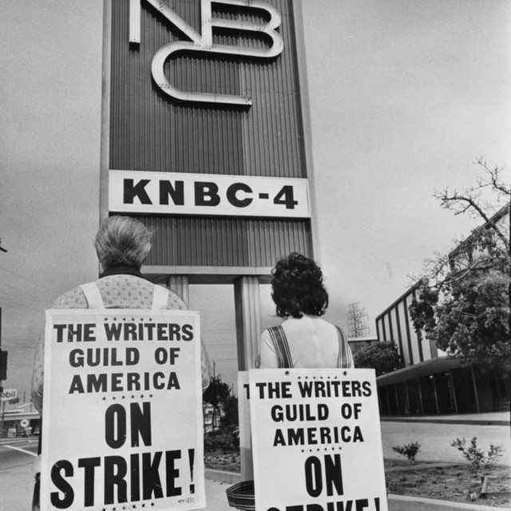

The Eclectic Polymath Podcast · Archive
#033: Hollywood’s Labor Machine: Guilds, Credits, Strikes, and Survival

About this episode
Hollywood runs on creativity, but behind every script, performance, credit, residual, and deal is a labor system built to protect the people who make the work.
This episode traces the difference between unions, guilds, and professional associations, from the studio system of the 1930s to the modern power of groups like the WGA, DGA, SAG-AFTRA, PGA, and CSA.
We look at collective bargaining, strikes, healthcare, residual payments, credit arbitration, agency packaging fees, and the rules that decide who gets paid, protected, and recognized in an industry built on collaboration.
Key points
- Hollywood runs on creativity, but behind every script, performance, credit, residual, and deal is a labor system built to protect the people who make the work.
- This episode traces the difference between unions, guilds, and professional associations, from the studio system of the 1930s to the modern power of groups like the WGA, DGA, SAG-AFTRA, PGA, and CSA.
- From studio bosses and exploitative contracts to streaming disruption, corporate consolidation, and generative AI, this is a story about authorship as labor, and why Hollywood’s future depends on who controls the terms of creative work.
More like this
 #248 Los Angeles Votes: Bass, Raman, and the Ballot That Rewrites Two GovernmentsOctober 31, 20261:04:54
#248 Los Angeles Votes: Bass, Raman, and the Ballot That Rewrites Two GovernmentsOctober 31, 20261:04:54 #246 Los Angeles: The Capital of the Pacific CenturyOctober 29, 20261:06:28
#246 Los Angeles: The Capital of the Pacific CenturyOctober 29, 20261:06:28 #240 The Eras of Disney: From Snow White to Soul, and the Next Hundred YearsOctober 28, 202646:31
#240 The Eras of Disney: From Snow White to Soul, and the Next Hundred YearsOctober 28, 202646:31 #242 DreamWorks: The Studio Built to Beat DisneyOctober 28, 202655:24
#242 DreamWorks: The Studio Built to Beat DisneyOctober 28, 202655:24